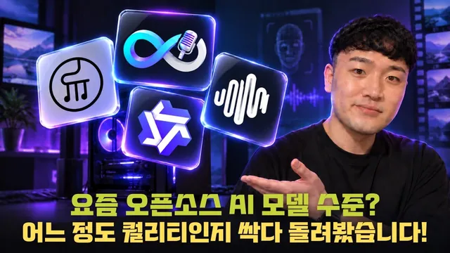

집에서 돌리는 최신 로컬 AI 모델, 콘텐츠 자동화에 어디까지 쓸 수 있을까? (워크플로우, 프롬프트 제공)

원본 영상 보기 →
- "돌아간다"와 "자동화에 쓸 수 있다"는 달라요
- 로컬 모델의 진짜 값어치는 비용보다 '제약 없음'이에요
- 영상 품질의 병목은 모델보다 프롬프트예요
한 줄 요약
32GB VRAM GPU 한 대로 최신 로컬 AI 모델 네 종류(이미지·아바타·영상·음악)를 직접 돌려 봤어요. 콘텐츠 자동화 파이프라인에 바로 넣어도 되는 모델과, 아직 사람이 붙어야 하는 모델을 가려낸 실측 리뷰입니다. 결론은 아바타(인피니티토크)와 음악(V2)은 합격, 이미지(Qwen Image 2.1)는 불합격, 영상(미니맥스 H3)은 프롬프트 연구가 더 필요하다는 거예요.
전체 내용 정리
기준은 "돌아간다"가 아니라 "반복해서 쓸 수 있느냐"예요
샘 호트만은 로컬 모델 설치 영상은 많지만, 설치돼서 돌아가는 것과 자동화에 넣어 콘텐츠로 쓸 수 있는 건 전혀 다른 이야기라고 말합니다.
그래서 촬영 시점 기준으로 성능이 좋고 화제가 된 모델을 종류별로 하나씩 골랐어요. 이미지는 Qwen Image 2.1, 아바타는 인피니티토크, 영상은 미니맥스 H3, 음악은 "일주일 전 수노(Suno) AI를 거의 따라잡았다"는 V2 모델입니다. 아바타는 더 좋은 모델이 있지만 본인 GPU에서 돌릴 수 있는 최선이 인피니티토크였다고 밝혀요.
판단 기준은 대량 반복이 가능한가입니다. API를 쓰면 돈은 들어도 품질은 잘 나오죠. 그런데 내 GPU로 돌렸을 때 어느 정도 품질이 반복적으로 나오는지 봐야 자동화에 넣을지 판단할 수 있거든요. 각 모델의 생성 시간과 GPU 메모리 사용량도 터미널로 직접 쟀습니다.
이미지: 한글이 안 됩니다
텍스트로 이미지를 만드는 방식과, 이미지를 넣어 이미지를 만드는 방식을 모두 테스트했어요.
먼저 인포그래픽은 탈락이었습니다. 영어 텍스트 렌더링은 잘하는데 한글은 오타가 계속 나왔고, 특히 받침이 들어간 글자는 거의 실패했어요. 텍스트 밀도가 낮은 부분은 조금 낫지만 여전히 오탈자가 섞였습니다. 중국 모델이라 중국어 렌더링은 좋다고 알려졌는데 실제로는 미흡했고요.
본인 캐릭터 시트를 넣어 유튜브 썸네일을 만들어 봤더니, 인물 일관성은 유지됐지만 "하단 10~15%는 비워 두라"는 지시를 안 지켰고 썸네일 위 오브젝트도 잘 안 나왔습니다.
다만 로컬 모델의 진짜 쓰임새는 따로 있어요. 검열 회피입니다. 나노바나나 같은 클라우드 모델이 저작권·폭력성·총기 등을 이유로 거부하는 요청도 로컬에선 편하게 생성됐어요.
결론은 이렇습니다. 일반 용도라면 GPT나 나노바나나 같은 유료 이미지 모델을 쓰고, 특수한 우회 케이스가 있을 때만 로컬을 시도하세요. 생성 속도를 높여 주는 파인튜닝 모델도 있다고 소개합니다.
아바타: 입모양은 좋은데 23초에 20분 걸려요
아바타는 샘 호트만이 자동화에 가장 많이 쓰는 영역입니다.
입력 방식은 이미지+오디오와 비디오+오디오 두 가지예요. 오디오는 필수, 프롬프트는 선택입니다. 본인을 열 살 정도 젊게 만든 이미지와 스튜디오 배경 이미지에 릴스 나레이션 음성을 붙였는데 입모양이 굉장히 자연스러웠어요.
팁이 하나 있습니다. "입 움직임만 표현한다"는 문구를 프롬프트에 안 넣으면 모션이 과도하게 커져요.
속도는 아쉽습니다. 23초짜리 영상에 약 20분이 걸렸고, 32GB VRAM 중 22GB 가까이 찼어요. 직접 찍은 셀프 영상+음성 방식은 뒤로 갈수록 입모양 일관성이 떨어져서, 앞부분만 잘라 릴스에 붙여 쓰고 있다고 합니다.
활용 아이디어도 제시해요. 얼굴 없는 유튜브, 그리고 외국어를 못 해도 해외 진출용 영상 제안서를 만들어 콜드메일로 개인화해서 대량 발송하는 방법입니다. GPU가 없다면 웨이브스피드(WaveSpeed)에 5~8달러 정도 최소 충전하고 인피니티토크 API를 테스트한 뒤, API 코드를 Claude나 GPT에 넘겨 구현을 맡기는 걸 추천해요.
영상: 시네마틱은 되는데 모션 그래픽은 아쉬워요
이미지 여러 장과 참조 비디오를 합친 모션 그래픽, 그리고 텍스트만으로 만드는 영상을 테스트했습니다.
모션 그래픽은 마켓플레이스 영상을 참조로 주고 본인 유튜브 URL로 채널 소개 영상을 만들어 봤어요. 전체적으로 나쁘지 않았지만 폰트가 너무 AI 같았고, 썸네일 속 인물이 본인과 안 닮았고, 오탈자도 있었습니다. 영상에 함께 생성되는 나레이션은 음소거하거나 후편집하라고 권해요.
피카츄와 토토로가 로봇과 싸우는 장면은 엉뚱한 곳을 쏘는 등 연속성이 무너져서 실패였습니다.
반면 텍스트로 샷마다 대본과 구간을 정교하게 묘사한 시네마틱 영상은 꽤 잘 나왔어요. 샘 호트만은 모델이 아니라 본인 프롬프트가 부족했다고 판단합니다. 이번엔 GPT 6 Sol로 프롬프트를 짰는데, Opus 5.5 기반 메타프롬프트를 쓰면 더 좋을 거라고 봐요.
15초 영상 하나에 8분 21초가 걸렸고 GPU를 거의 풀로 써서 전기세가 걱정될 수준이었습니다. 개선 아이디어로 Claude로 블렌더(Blender) 장면을 만든 뒤 그 결과물을 H3에 넣는 방식을 따로 연구하겠다고 해요.
음악: 편곡과 한국어 발라드까지 수노급이에요
V2는 텍스트→오디오 생성과, 코드·악보 기반 편곡을 지원합니다.
가장 놀라운 건 편곡이었어요. 익숙한 원곡을 보컬 없이 피아노+UK 드릴 장르로 바꿨는데 드릴 느낌이 제대로 났습니다.
다만 조건이 있어요. 양자화(quantization)하지 않은 원본 모델에서만 그랬습니다. 양자화 모델은 빌드업은 좋아도 드릴 느낌이 전혀 안 났어요. 양자화는 텍스트 이해도를 어느 정도 포기하는 거라서요.
한국어도 놀랍습니다. 반년 전만 해도 오픈소스 음악 모델에 한글 가사를 넣으려면 발음대로 영어로 바꿔야 했는데, 이번엔 Claude가 짜 준 가사로 한국 발라드를 불러도 자연스러웠어요. 80년대 시티팝도 수노와 큰 차이가 없었고요. 이전에 쓰던 에이스 스텝(ACE-Step)과는 비교가 안 될 만큼 발전했고, GPU 메모리도 적게 먹고 생성 시간도 짧습니다.
단점은 두 가지예요. 품질 검수가 취향의 영역이라 자동화하기 어렵다는 점, 그리고 라이선스가 논커머셜이라 상업적 사용에 주의해야 한다는 점입니다.
결론: 합격은 아바타와 음악, 핵심은 메타프롬프트
실제 작업은 ComfyUI 워크플로우로 했습니다. 본인은 ComfyUI를 다룰 줄 몰라서 코덱스(Codex)에 워크플로우 제작을 전부 맡겼고, 대신 모델별 입력·출력이 무엇인지는 직접 공부해 뒀다고 해요.
가장 크게 느낀 점은 이미지·비디오 프롬프트를 잘 짜 주는 메타프롬프트 시스템(하네스)을 더 정교하게 만들어야 한다는 겁니다. GitHub에서 "awesome" 키워드로 해외 큐레이션 자료를 참고하라고 권해요.
측정값은 이렇습니다. 이미지 한 장 약 2분(VRAM 절반 조금 넘게), 아바타는 그보다 높은 메모리, 비디오는 가장 오래 걸리고 GPU를 거의 풀로 사용, 음악은 부담이 적었어요. 더 작은 GPU에서도 돌아가도록 체크포인트를 따로 만든 개발자가 많으니 찾아보라고 합니다.
최종 판정은 이래요. 인피니티토크와 V2는 앞으로도 쓰고, 이미지는 그냥 돈을 내고 유료 모델을 쓰는 게 "정신 건강에 좋다", H3는 더 연구하겠다. VRAM 32GB가 부족해서 맥 스튜디오 256GB에 추가 투자했다는 소식도 전합니다.
핵심 인사이트
- "돌아간다"와 "자동화에 쓸 수 있다"는 달라요: 로컬 모델 평가 기준은 설치 성공이 아니라 대량 반복 시 품질·시간·메모리입니다. 23초 아바타에 20분, 15초 영상에 8분 21초라면 파이프라인 설계 자체가 달라져요.
- 로컬 모델의 진짜 값어치는 비용보다 '제약 없음'이에요: 이미지 품질은 유료 모델에 크게 밀리지만, 클라우드가 거부하는 요청을 처리할 수 있다는 게 차별점입니다. 용도를 좁혀 써야 해요.
- 영상 품질의 병목은 모델보다 프롬프트예요: 같은 H3로도 샷별로 정교하게 묘사한 시네마틱은 성공했습니다. 메타프롬프트 시스템을 먼저 다듬는 게 모델 교체보다 효과가 커요.
오늘 당장 해볼 것
- 지금 외주로 맡기거나 직접 만드는 콘텐츠 중 매주 반복되는 것 하나를 골라 "1편 만드는 데 걸리는 시간·비용"을 적어 두세요. 릴스 나레이션 영상이든 배경음악이든요. 로컬이든 API든 도입 판단의 기준선이 됩니다.
- 영상에 쓸 배경음악이 필요하다면 라이선스(상업적 사용 가능 여부)를 먼저 확인하세요. 업체에 맡길 때도 "이 음원 상업 라이선스 확인했나요?"를 꼭 물어보시고요.
- 아바타 영상에 관심이 있다면 웨이브스피드 같은 API 서비스에 5~8달러만 충전해서 본인 사진+음성 10초로 한 번 테스트해 보세요. 입모양이 앞부분에서만 맞는지 끝까지 맞는지 직접 보면 압니다.